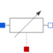

HeatingResistorTemperature dependent electrical resistor |

|
Information
This information is part of the Modelica Standard Library maintained by the Modelica Association.
This is a model for an electrical resistor where the generated heat is dissipated to the environment via connector heatPort and where the resistance R is temperature dependent according to the following equation:
R = R_ref*(1 + alpha*(heatPort.T - T_ref))
alpha is the temperature coefficient of resistance, which is often abbreviated as TCR. In resistor catalogues, it is usually defined as X [ppm/K] (parts per million, similarly to percentage) meaning X*1e-6 [1/K]. Resistors are available for 1 .. 7000 ppm/K, i.e., alpha = 1e-6 .. 7e-3 1/K;
Via parameter useHeatPort the heatPort connector can be enabled and disabled (default = enabled). If it is disabled, the generated heat is transported implicitly to an internal temperature source with a fixed temperature of T_ref.
If the heatPort connector is enabled, it must be connected.
Parameters (5)
| useHeatPort |
Value: true Type: Boolean Description: =true, if heatPort is enabled |
|---|---|
| T |
Value: T_ref Type: Temperature (K) Description: Fixed device temperature if useHeatPort = false |
| R_ref |
Value: Type: Resistance (Ω) Description: Resistance at temperature T_ref |
| T_ref |
Value: 300.15 Type: Temperature (K) Description: Reference temperature |
| alpha |
Value: 0 Type: LinearTemperatureCoefficient (¹/K) Description: Temperature coefficient of resistance (R = R_ref*(1 + alpha*(heatPort.T - T_ref)) |
Connectors (3)
| p |
Type: PositivePin Description: Positive electrical pin |
|
|---|---|---|
| n |
Type: NegativePin Description: Negative electrical pin |
|
| heatPort |
Type: HeatPort_a Description: Conditional heat port |
Used in Examples (2)
|
Modelica.Electrical.Analog.Examples
Heating resistor |
|
|
Modelica.Thermal.HeatTransfer.Examples
Control temperature of a resistor |